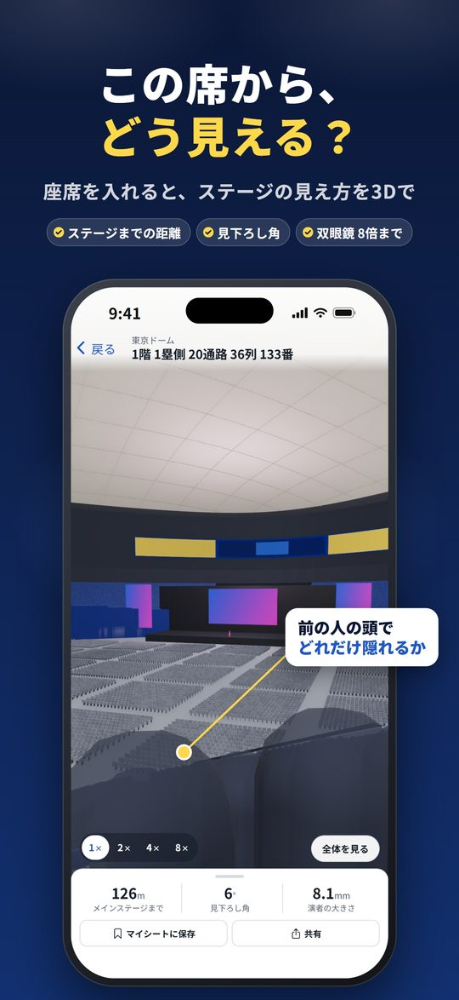
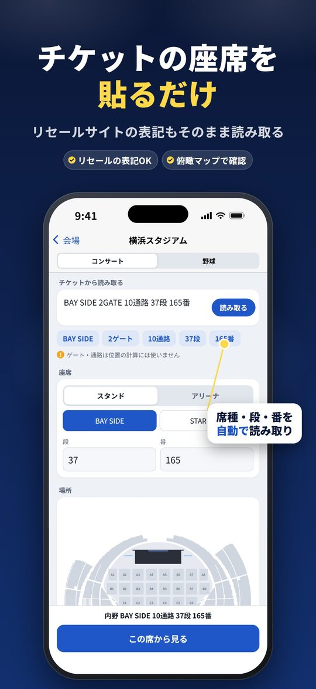
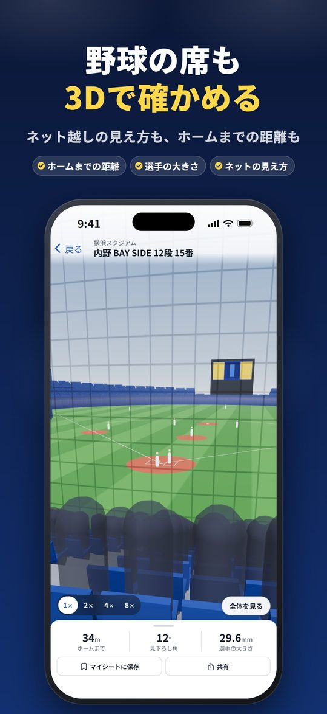
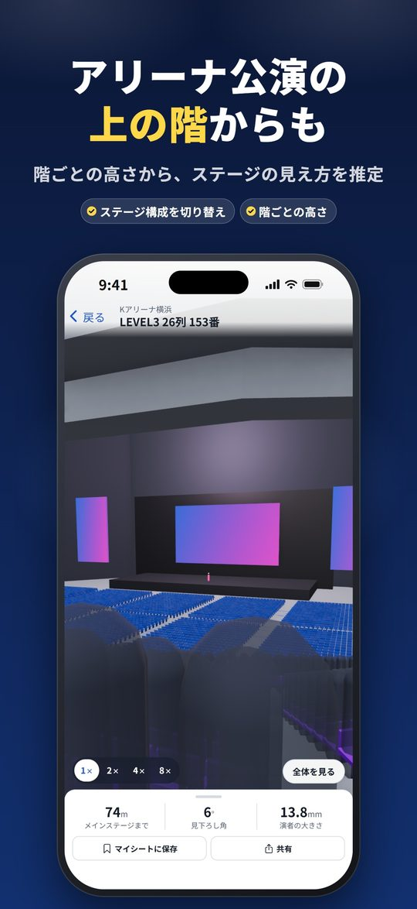
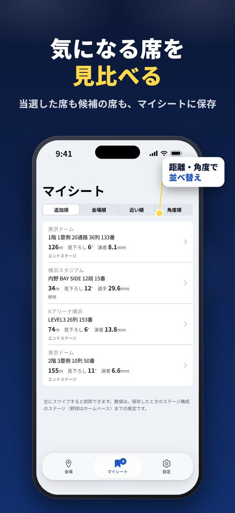

使い方
- 会場を選ぶ
- 座席を入力する。チケットやリセールサイトの座席の文字を貼り付けても読み取れます
- 俯瞰マップで場所を確かめて、「この席から見る」を押す
できること
- 座席からの眺めを3Dで表示。肉眼のほか、2・4・8倍の双眼鏡の見え方も
- ステージやホームベースまでの距離と、見下ろす角度
- 前の観客で視界がどれだけ遮られるか（自分と周りの身長を設定できます）
- 野球とコンサートのステージ構成の切り替え、アリーナ席の指定
- 気になる席を「マイシート」に保存して、距離や角度で並べて見比べる
- 会場のデータはアプリに入っているので、電波の届きにくい会場の中でも使えます
対応している会場（22会場）
球場・ドーム
- 東京ドーム
- 京セラドーム大阪
- バンテリンドーム ナゴヤ
- みずほPayPayドーム福岡
- ベルーナドーム
- 阪神甲子園球場
- 横浜スタジアム
- 明治神宮野球場
- MAZDA Zoom-Zoom スタジアム広島
- エスコンフィールドHOKKAIDO
- 楽天モバイル 最強パーク宮城
- ZOZOマリンスタジアム
アリーナ・ホール・スタジアム
- 日産スタジアム
- さいたまスーパーアリーナ
- Kアリーナ横浜
- 横浜アリーナ
- ぴあアリーナMM
- パシフィコ横浜 国立大ホール
- 日本武道館
- 国立代々木競技場 第一体育館
- 大阪城ホール
- IGアリーナ
会場は順に追加しています。追加してほしい会場はサポートからお知らせください。
行く前に、自分の席からの眺めを確かめておこう。